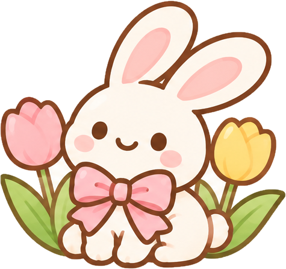

JANIKS ANIKS · LITTLE THINGS, BIG JOY

Seasonal collections
Explore sweet seasonal finds, festive gifts, and cute collections for every time of year.
Christmas CollectionFestive gifts and holiday favoritesExplore collection →
Halloween CollectionSpooky-cute styles and autumn colorsExplore collection →
 Valentine's Day CollectionSweetheart gifts, bows, and little things to loveExplore collection →
Valentine's Day CollectionSweetheart gifts, bows, and little things to loveExplore collection →
Valentine's Day CollectionSweetheart gifts, bows, and little things to loveExplore collection →

Spring CollectionFresh florals, soft pastels, and bunny-cute findsExplore collection → Summer CollectionSunny colors, playful favorites, and bright little giftsExplore collection →